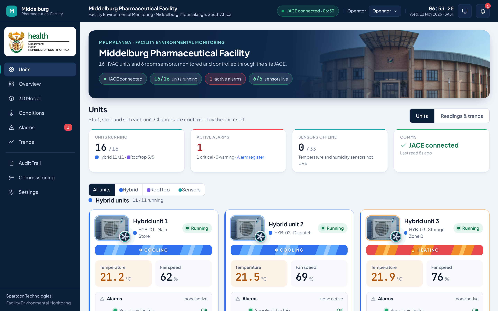

1Getting started
The BMS dashboard shows the live temperature, humidity and status of every HVAC unit and room sensor in the warehouse, records every reading, and lets authorised operators start/stop the rooftop units and adjust their temperature setpoints.
Open the dashboard
- On site (any PC on the site network): http://192.168.1.90:8080
- Remotely: connect Tailscale first (see the Remote Access guide), then http://100.103.134.56:8080
- Use Chrome, Edge, Firefox or Safari. No software to install.
Who can do what
- Viewer: sees everything, cannot send commands.
- Operator: can start/stop rooftop units and change setpoints.
- Admin: Spartcon only (settings).

The Units page (home). Left: menu. Top: connection status, your role, clock, wall-display mode and the alarm bell.
Green "JACE connected"Readings are live from the building controller. The clock shows when it last read.
Red "JACE connection lost"Values are no longer live and controls are locked. Contact the IT administrator.